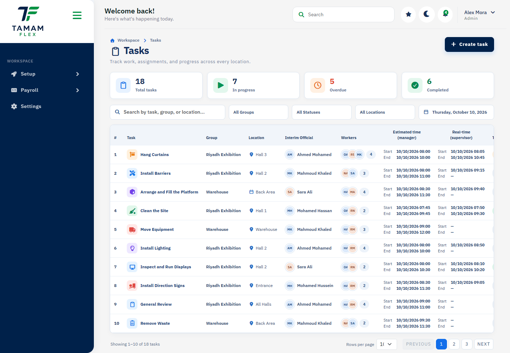

Setup
Maintain workers, contracts, work groups, schedules, tasks, and attendance policies.
Tamam Flex handbook
Start with your role, then use the project page directory for a dedicated guide and screenshot of each available screen.
Role 01
Users review their work context, assigned tasks, notifications, and profile information.
Employee mobile app
Follow the employee app from sign-in through attendance, leave requests, tasks, and your profile.
Role 02
Managers organize workers and groups, deliver work through tasks, review attendance reports, and prepare period closures.
Maintain workers, contracts, work groups, schedules, tasks, and attendance policies.
Use reports and task information to identify attendance or delivery exceptions.
Validate information before calculating, reviewing, or approving payroll.

Role 03
Administrators manage company-level configuration, roles, contracts, and manager access.
Create roles carefully and assign only the permissions required for each job.
Maintain settings and policy information that affect company operations.
Review data and exceptions before approving critical workflow steps.
Detailed reference
Every static project screen in this version is listed in the directory, with an individual page and corresponding screenshot.